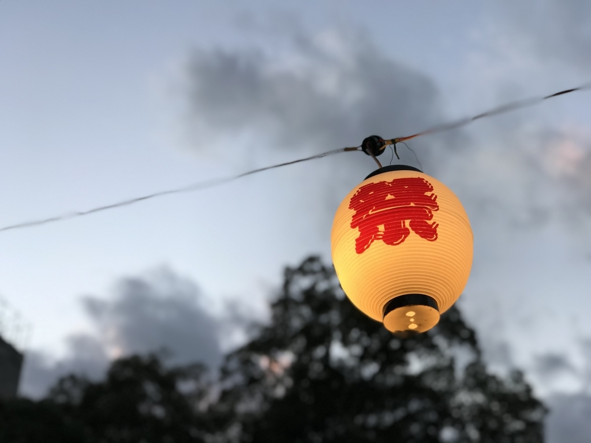
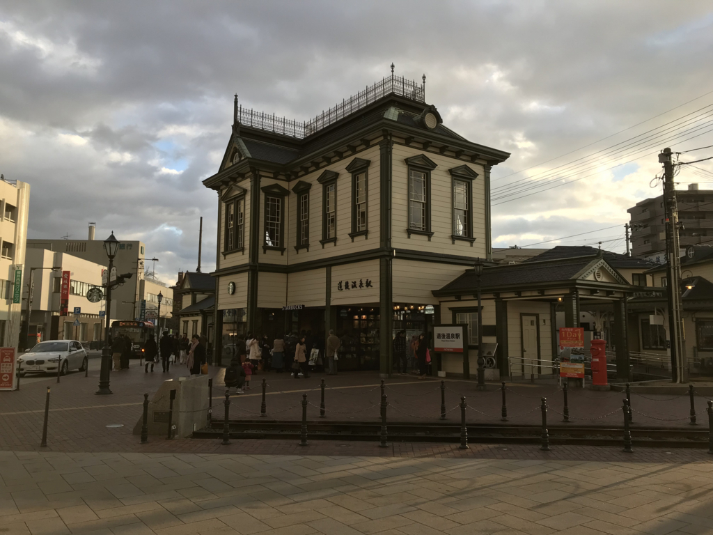
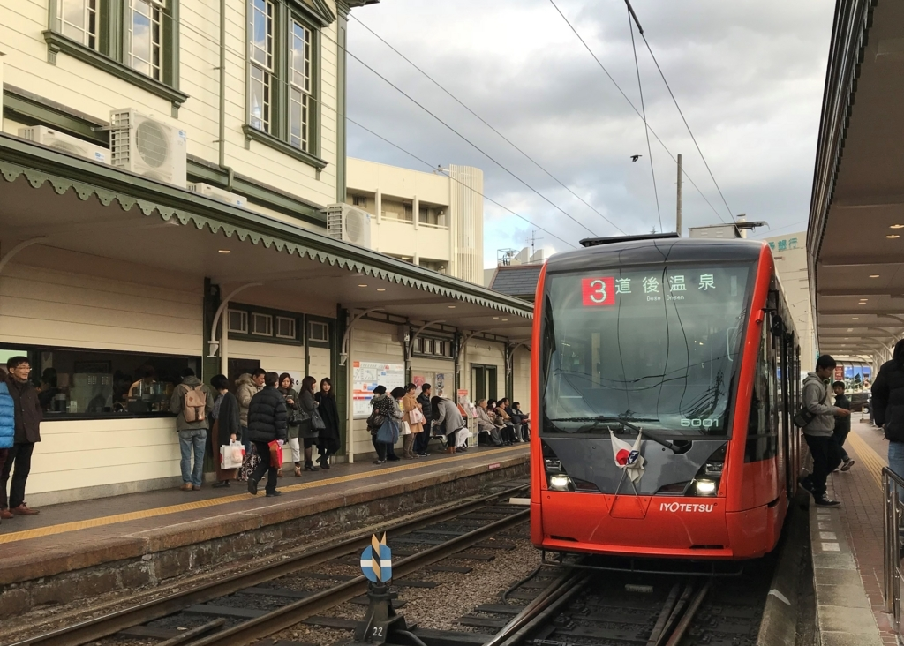
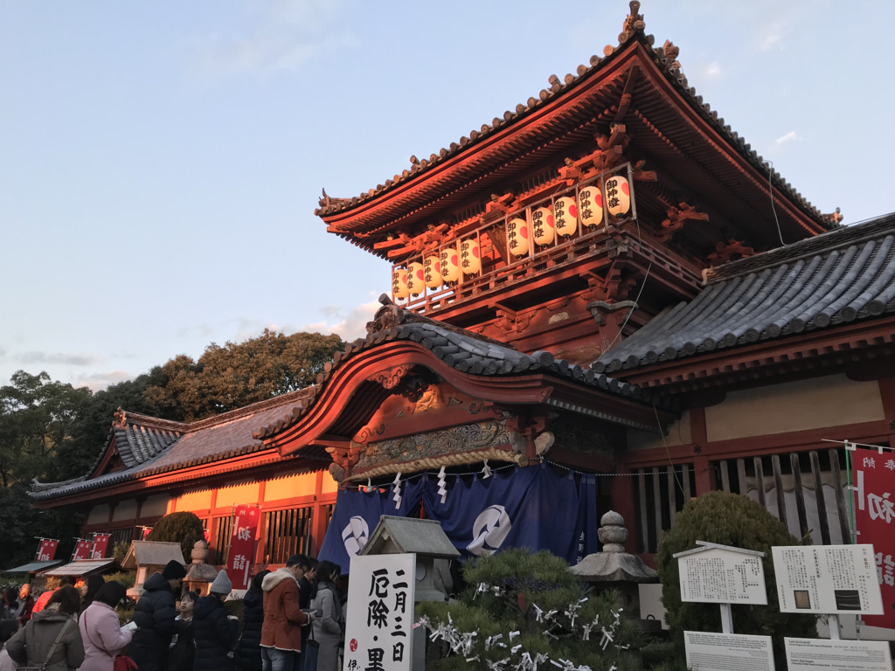
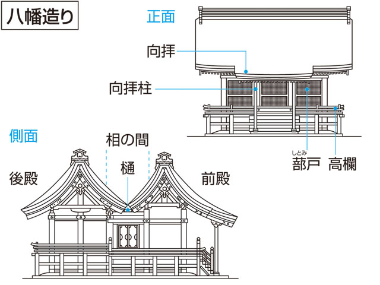
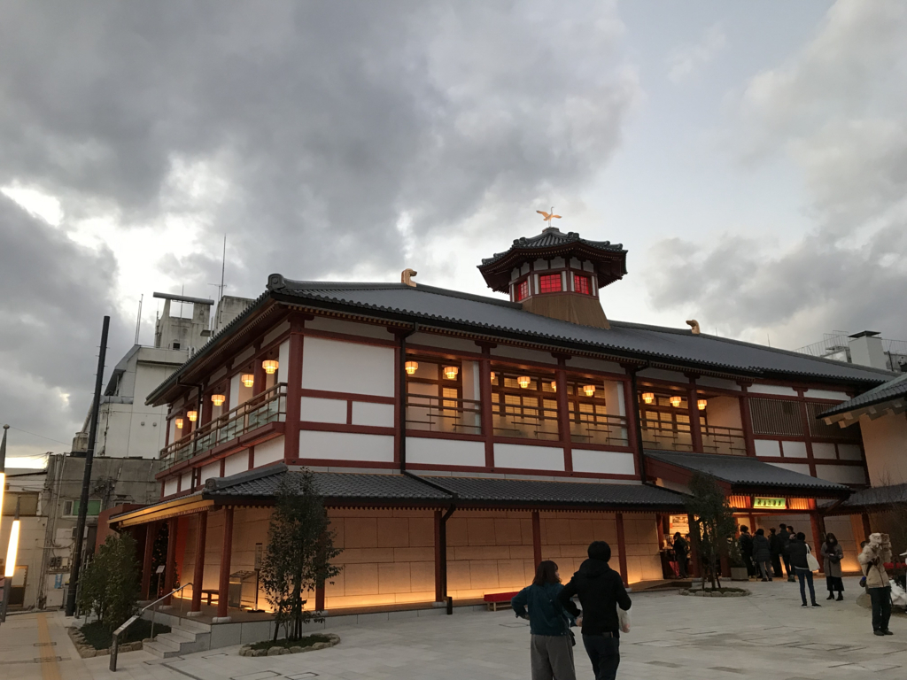
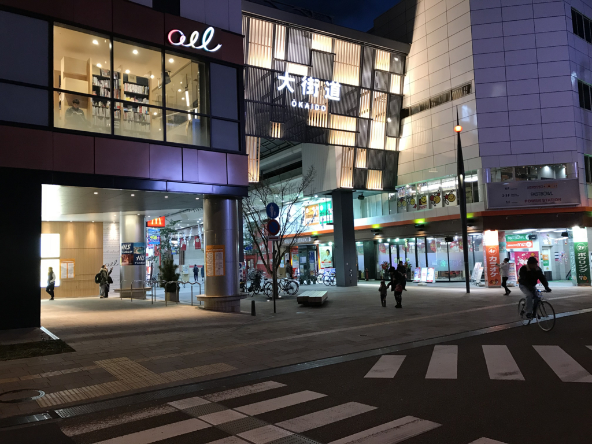
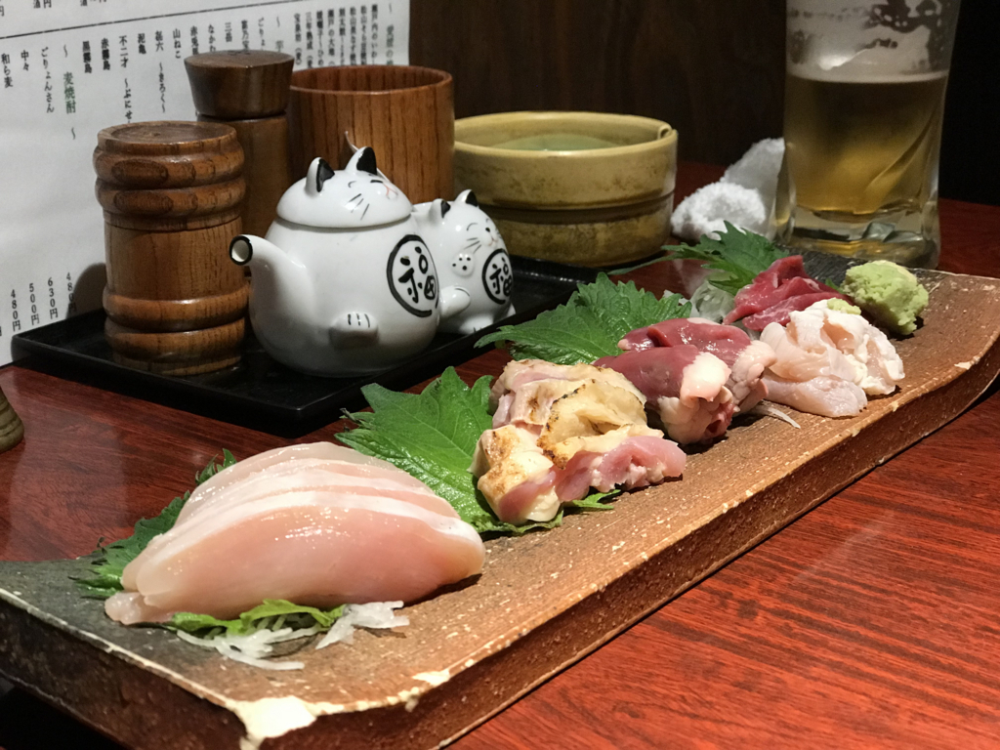

初詣：伊佐爾波神社
公開日：

今年の2月で愛媛・松山にきて4年になるみたいですが*1、実は今まで正月を松山で過ごしたことがありませんでした。東京の実家でゴロゴロしたり、奈良の友達のところでご厄介になったり……なので、正月に初詣に行きたくとも、どこへ行っていいのかよくわからなかったりします。今回はとりあえず @ramusara 君に案内してもらって、道後の伊佐爾波（いさにわ）神社に詣でてみました。

待ち合わせは道後温泉駅で。最近、駅舎が改装されてなかにスターバックスが入ったらしい。ちょっと入ってみたかったのだけど、観光客が多いのかな、カウンターで客が列をなしていたのでまた今度。コンビニでポンジュースグミを買い、むにょむにょと口の中でもてあそびながら時間をつぶしていました。

ちなみに、上一万駅からは去年導入されたばかりの新車でした。結構レアなはずなので（2台ぐらいしか走ってない？）、運がいい。今年はいいことがありそう（これで運を使い果たしていなければ）。
伊佐爾波神社は駅から割と近く、からくり時計の広場から鳥居を望むことができます。石段はちょっとげんなりするぐらい長い。四十前のおっさんには視覚的に有害で、フツーの日であれば石段の先を見上げただけでお参りした気になり、温泉にでも避難していたかもしれません。でも、この日はなんとなく列尾に付してだらだらと歩を進めるうちに上までたどり着けました。人込みは嫌いなのだけど、まぁ、ときにはこういう効能もある。

社殿はなかなか立派で、あとで少し調べたところによると、全国に3例しかない八幡造で、国の重要文化財に指定されているのだそうな。

神社本殿形式の一。切妻造り・平入りの社殿二つを前後につなぎ、両方の屋根が接する部分に樋(とい)を設けたもの。宇佐神宮・石清水(いわしみず)八幡宮の本殿などにみられる。
次に参拝した時はよく見てみようと思う。
お賽銭を投げたあとはぐるっと回廊をめぐり、“算額”などを見て回りました。算額というのは額や絵馬などに和算の問題・解法を記して寺社仏閣に奉納したもの（別に解けなくてもいいらしい）。あまりよく知らないのですが、江戸時代はこういうのが流行っていたらしいですね。伊佐爾波神社では、日本最多となる22の算額が残されているのだそう。
そのほかにも、江戸時代の額が雑然とおいてありました。日が落ちて暗かったためあまりよく見えなかったのですが、実は見どころが多い神社なのかも。おみくじも大吉をいただいたし、なかなかよいところだと感じました。ただ、大吉の割にはあまりよくないことが書いていて――モノをもってないのに売れば儲かるだとか、結婚は無理やなーとか――、その点はちょっと微妙というか、こう、もっとおだててよ！ ブタだって木に登りたいときはあるんだよ！ みたいな感じ。

参拝のあとは湯神社をぬけて、道後温泉の本館を見下ろし、商店街をぶらぶらしながら、飲みに行く店を物色しました。できたばかりの"飛鳥之湯"もみてきました。観光シーズンがひと段落したら入ってみたい。

結局、道後温泉では心惹かれる飲み屋を見つけられなくて（どうせ観光客向けだろ、という偏見がアダとなった）、電車で大街道に移動。でも、これが悪手だったらしい。いつもは賑やかな（？）大街道ですが、正月はあまり店が開いておらず……散々歩いて、お店を探す羽目になりました。僕らはさいわいよさげな店に滑り込むことができたのですが、そのあとも満員でお断りされる客が引きも切らず。正月は道後でぐだぐだするか、あらかじめ大街道のお店を予約しておくのがよいみたい。これは実際に正月を松山で過ごしてみないとわからないことでした。

お店の名前は忘れちゃったけど、鶏メインで美味しかったです*2。お会計が2人で2万を超えて、店主らしき人に「よく食べますねー」なんて言われちゃったのだけど、いつもビールを無限に摂取してなかなかの金額になってしまうんだよね。ウチは独身だし、たまに街で飲むのが娯楽でもあるわけで。いつも財布に数万円仕込んで、あとはその範囲内でパーっと飲んじゃうんだけど、いつもそんなペースでやっちゃうとついてくるのがしんどい人もいるかもだから、今年はよくよく考えないといけない。